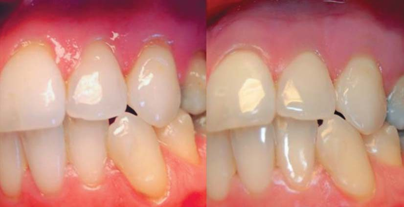
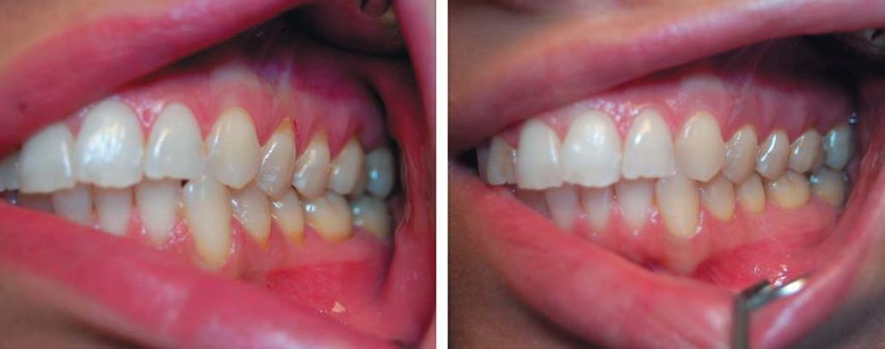

Наука · журнал «ДентАрт» 2022 №1
Застосування ателоколагену у лікуванні тканин пародонта – пілотне дослідження
The use of atelocollagen in the treatment of periodontal tissues – a pilot study
У стоматології серйозну проблему становить втрата об'ємів тканин, які оточують і підтримують зуби. Ін'єкційна форма ателоколагену – багатообіцяючий матеріал для регенерації та стимуляції м'яких тканин ясен.
Істотна нестача колагену в старіючій шкірі робить дуже бажаним його застосування як біостимулятора. Інтерес до цього білка значно зріс відтоді, як колаген людини стало можливим синтезувати в лабораторії. У стоматології серйозну проблему становить втрата об'ємів тканин, які оточують і підтримують зуби: це відчутно впливає на якість життя та естетичний вигляд зубів. Такі проблеми, як рецесія ясенного краю внаслідок скупчення бактеріального нальоту, пошкодження внаслідок необережного чищення зубів, захворювання пародонта і потреба в ортодонтичному лікуванні, дуже поширені.
У складі сполучної тканини ясен переважають фібробласти (5%) і такі клітини як мастоцити, макрофаги, нейтрофільні гранулоцити, лімфоцити і плазмоцити, присутні у власній пластинці слизової оболонки ротової порожнини. Позаклітинний матрикс містить глікозаміноглікани, такі як гіалуронова кислота, дерматансульфат і гепарансульфат, протеоглікани, глікопротеїни, а також волокна – ретикулінові, колагенові, окситаланові та еластичні. Колагенові волокна (65% об'єму) посідають чільне місце у структурі здорових ясен, а також при визначенні стадії розвитку захворювань тканин пародонта. Ступінь втрати колагену визнано ключовим маркером у цьому процесі.
Ранні ознаки втрати колагену у периваскулярній зоні виявляються на першій стадії гінгівіту (первинне вогнище ураження). Пов'язано це з тим, що майже 70% колагену руйнується на цій стадії у місці локалізації клітинного інфільтрату. Цей процес заторкує передусім кругові і зубоясенні волокна. В осередку, що сформувався, виникає зворотна залежність між кількістю запальних клітин і непошкодженого колагену. Процес починається апікально зі сполучного епітелію і поширюється на сполучну зв'язку періодонта. Дія різних ферментів, таких як колагеназа, а також фагоцитоз є механізмами, зумовленими деградацією колагену.
Колаген – основний протеїн сполучнотканинного матриксу, який впливає на міграцію кератиноцитів у пошкоджені ділянки епідермісу або епітелію і є важливим компонентом для якнайшвидшого загоєння ран та регенерації тканин. В ембріональному періоді в ясенних тканинах переважає колаген III типу, або зародковий. Після народження він поступово заміщується колагеном І типу, який стає переважним. Однак III тип колагену можна виявити в ретикулумі, V тип – у перицелюлярній зоні і IV тип – у базальних мембранах кровоносних судин. Волокна колагену I типу розташовані у глибинних шарах сполучної тканини ясен, а III типу – ближче до поверхні. Молекули колагену різних типів відрізняються будовою потрійної спіралі: два пептидні ланцюжки α1 і один α2 у колагену I типу та три однакових ланцюжки α1 – у III типу. В результаті об'єднання колагенових та неколагенових молекул формуються фібрили.
Колаген для виробництва біоматеріалів можна видобути з тканин тварин і людини (трупний матеріал, плацента, амніотичний мішок) або синтезувати з використанням рекомбінантних методів. Екстракцію з тваринних тканин роблять двома способами: ферментативне розщеплення пепсином і розчинення кислотою, що дозволяє отримувати дві різні форми колагену: ателоколаген та тропоколаген. Ателоколаген є кращим для комерційного використання завдяки міжвидовим антигенним властивостям P-детермінанту, розміщеного в телопептидах. Тому і алогенний, і ксеногенний колаген отримав широке визнання як безпечний біоматеріал.
Колаген вважається одним з найцінніших біоматеріалів завдяки чудовій біосумісності, слабкій антигенності та біорозкладності. Продукти на основі колагену випускають у різних формах, таких як рідина, гель, мембрана та гранули. Це робить його дуже корисним у медицині, особливо у тканинній інженерії: при відновленні слизової оболонки ротової порожнини, ясенної та кісткової тканини, регенерації і зміцненні шкіри, а також формуванні каркасу для штучних кровоносних судин та клапанів. У наш час доступний і ін'єкційний колаген – в ролі не тільки філера, але і біостимулятора сполучної тканини. Ця форма колагену традиційно використовується для поліпшення стану шкіри; однак на аналогічні результати можна очікувати і після колагенової стимуляції слизової оболонки ротової порожнини, де також є сполучна тканина. Клінічне спостереження стану ясенної тканини після ін'єкції ателоколагену є метою цього дослідження.
Дизайн дослідження і вибірка
Дослідження проведене у співпраці з відділом аспірантури і докторантури у сфері естетичної медицини Познанського медичного університету за участю пацієнтів стаціонару амбулаторної клініки відділу щелепно-лицьової ортопедії та ортодонтії у 2016–2017 рр. Дизайн дослідження був схвалений місцевим комітетом з питань етики (UMP 919/16), а саме воно проводилося у відповідності з керівними принципами Гельсінської декларації про біомедичні дослідження за участю людини як суб'єкта. Усі учасники надали письмову поінформовану згоду, перш ніж приєднатися до дослідження.
З-поміж усіх пацієнтів з рецесією ясенного краю у дослідження включені лише ті, чий стан відповідав I класу за класифікацією Міллера (дефект ясенної тканини не поширюється на слизово-ясенне з'єднання). Критеріями виключення були: локальні запалення, пародонтит в активній фазі, системні захворювання та некаріозні ураження зубів. У 18 пацієнтів (2 чоловіки і 16 жінок) у віці від 40 до 55 років було досліджено 97 випадків рецесії ясенного краю I класу за Міллером. Були виміряні три кінцеві показники: висота рецесії, втрата об'ємів міжзубних сосочків і товщина ясен. Висоту рецесії (відстань від цементо-емалевої межі коронки зуба до краю ясен) і втрату об'ємів міжзубних сосочків (відстань від точки дотику до верхньої частини сосочка) було виміряно за допомогою стандартизованого пародонтологічного зонда (UNC15).
Ін'єкції колагену та алгоритм проведення вимірювань для кожного пацієнта підбиралися індивідуально. Наступні вимірювання робилися завжди перед черговою ін'єкцією та за одне відвідування: товщина ясен визначалася при ін'єкції колагену (перед першою і кожною наступною ін'єкцією) як відстань між кінцем голки (розмір 0,4 мм) і точкою розташування на голці спеціальної насадки, яка вимірювалася цифровим штангенциркулем (Topex). Точка вимірювання визначалася з урахуванням цементо-емалевої межі. У всіх випадках ателоколаген (Linerase, 100 мг), розведений 4,5 мл 0,9% розчину хлориду натрію і 0,5 мл 2% лідокаїну, вводили в кератинізовані ясна на 2 мм вище основи міжзубних сосочків, 3 рази з інтервалом 2 тижні. Відстань між точками ін'єкцій – понад 10 мм.
Обробка статистичних даних
Обробка всіх статистичних даних виконувалася з використанням комерційно доступного програмного забезпечення STATISTICA V12.5 PL (StatSoft, Талса, Оклахома, США). Для оцінки розподілу безперервних змінних застосовувався критерій Шапіро – Вілка. Розподіл всіх безперервних змінних не був нормальним. Дані подано у вигляді медіани (інтерквартильний розмах, IQR) для безперервних змінних. Відмінності у показниках товщини ясен до і після введення колагену досліджено із застосуванням непараметричного знакового рангового критерію Вілкоксона. p<0,05 вважалося статистично значущим.
Результати
У всіх 97 досліджуваних випадках ясенної рецесії ін'єкцію ателоколагену зробили двічі. У 37 випадках провели додаткову, третю ін'єкцію.


| Показник | До ін'єкції колагену | Після двох ін'єкцій | p |
|---|---|---|---|
| Висота рецесії | 1 (0,5–2) | 0 (0–0,5) | <0,000001 |
| Втрата об'ємів ясенних сосочків | 1 (0,5–1,5) | 0 (0–0,5) | <0,000001 |
| Товщина ясен | 0,3 (0,1–0,5) | 0,6 (0,3–0,8) | <0,000001 |
| Показник | До ін'єкції колагену | Після трьох ін'єкцій | p |
|---|---|---|---|
| Висота рецесії | 0,5 (0–1,5) | 0 (0) | 0,00002 |
| Втрата об'ємів ясенних сосочків | 1 (0,5–1,5) | 0 (0) | 0,00001 |
| Товщина ясен | 0,1 (0,1–0,4) | 0,7 (0,5–1) | 0,000002 |
| Показник | Після двох ін'єкцій | Після трьох ін'єкцій | p |
|---|---|---|---|
| Висота рецесії | 0 (0–0,5) | 0 (0) | 0,02 |
| Втрата об'ємів ясенних сосочків | 0 (0–0,5) | 0 (0) | 0,1 |
| Товщина ясен | 0,5 (0,3–0,6) | 0,7 (0,5–1) | 0,000004 |
Статистично значущі зміни у показниках рецесії ясенного краю, втрати об'ємів ясенних сосочків і товщини ясен спостерігалися як після двох (таблиця 1), так і після трьох (таблиця 2) ін'єкцій колагену. Хоча з кожною ін'єкцією висота рецесії зменшувалася, а товщина ясенної тканини збільшувалася, відмінностей у ступені втрати об'ємів ясенних сосочків після другої і третьої ін'єкції колагену не помічено (таблиця 3). Зміни були помітні при клінічному обстеженні і, таким чином, були клінічно значущими (фото 1, 2).
Обговорення
У медичній практиці колаген широко застосовується у системах доставки ліків, білків та наночастинок. Крім того, це матриця для клітинних культур. Його також вважають чудовим біостимулятором і філером. Основні способи застосування – колагенові щити та губки для кращого загоєння ран завдяки високій біосумісності колагену та його здатності формувати каркас для молодих клітин прилеглих тканин. Колаген відповідає й іншому параметру – балансу між стійкістю та розкладністю – для біоматеріалів, що застосовуються у клінічній практиці.
Колаген біоматеріалів розщеплюється швидше, ніж колаген організму, і захищає природний колаген від дії матриксних металопротеїназ. Продукти його розпаду також стимулюють міграцію і проліферацію фібробластів, розвиток клітин епітелію та ендотелію судин, формування зернистої тканини. Добре відомо, що каркаси з колагену I типу – чудові матричні підкладки, адгезивні властивості яких полегшують проліферацію, міграцію та диференціацію клітин. Колагенові губки застосовують у стоматологічній хірургії, використовуючи їхню природну перевагу – біосумісність гемостатичних якостей. Вони піддаються метаболізму і можуть бути фізіологічно засвоєні організмом-господарем без будь-яких побічних ефектів. Більше того, вони мають позитивний вплив на коагуляцію крові і загоєння ран, полегшують матурацію рани і стабілізують її, стимулюючи формування первинного згустка крові та фібринових зв'язків.
Інші форми колагену, що використовуються в регенеративних процедурах у пародонтології, – це колагенові мембрани або 3D-матриці, такі як Mucoderm. Такі самі клінічні результати спостерігалися при використанні колагенової мембрани як трансплантата при лікуванні ясенної рецесії, порівняно із застосуванням субепітеліального трансплантата сполучної тканини (CTG). Проте під час метааналізу не було виявлено помітної різниці у значеннях ширини кератинізованої зони – ключовому параметрі стійкості ясенної тканини; виявлено лише значне збільшення товщини ясен при застосуванні CTG. Доклінічні гістологічні дослідження демонстрували вищу результативність (товщина м'яких тканин, ширина зони кератинізованих ясен), коли результати застосування колагеновмісних рішень – таких як колагенові матриці, еквіваленти людської шкіри (двошарова клітинна терапія, BCT), отриманий із фібробластів людини термальний замінник (HF-DDS) та безклітинна дермальна матриця (ADMG) – порівнювали з показниками контрольної групи.
У нашому дослідженні гідні уваги результати продемонструвала ін'єкційна форма колагену. Уже після двох ін'єкцій спостерігалося значне поліпшення стану ясен. Поліпшилися і висота рецесії, і стан сосочків. Істотно зросла товщина ясенної тканини. Однак порівняти та оцінити результати дослідження не є можливим, оскільки аналогічних досліджень на даний момент немає. У нашій роботі використовувався колаген, який виробляється для цілей естетичної медицини і характеризується як кінський ателоколаген.
У ротовій порожнині є жувальна слизова оболонка, яка, маючи пухку структуру, покриває тверде піднебіння і ясна поверх сполучнотканинної основи і не стикається з підлеглою кісткою. Її біостабільність перешкоджає склеюванню країв рани і сприяє швидшій міграції клітин. Це веде до прискореного загоєння ран на слизовій оболонці ротової порожнини. Цікаво, що певний фенотип фібробластів ясенних тканин також може впливати на загоєння ясен. Гетерогенність фібробластів помітна, якщо порівнювати стан слизової оболонки ротової порожнини із прикріпленою і вільною зонами ясен, а також у межах проби, взятої з однієї ділянки. Фібробласти – одні з найчисленніших типів стромальних клітин – у нормі перебувають у фазі спокою, але після пошкодження тканини вони переходять в активний стан під впливом секрету розчинних клітинних медіаторів та деградованого позаклітинного матриксу. Активовані фібробласти сприяють відновленню тканин шляхом продукування і ремоделювання компонентів позаклітинного матриксу, а також стимуляції формування зернистої тканини та ангіогенезу.
Фібробласти мають високу сприйнятливість, насамперед до змін в оточуючому матриксі, факторів росту та цитокінів, і реагують на ці сигнали. Більше того, поєднання ателоколагену та фактора росту фібробластів є ефективнішим при лікуванні стійких пошкоджень шкіри зі значною глибиною рани. Така активність фібробластів у відповідь на зовнішні фактори винятково важлива для стимуляції, що робиться колагеновими біоматеріалами. Особливу важливість для масштабів синтезу нових фібрил колагену має співвідношення різних типів колагенів у біоматеріалах, що ін'єктуються. Так, різниця між колагенами I, III і V типу є суттєвою. Ще одне спостереження засвідчує, що адгезія клітин до різних матеріалів відбувається з різною швидкістю. Передбачається, що клітини глибше проникають у каркас зі свинячого та кінського колагену через різницю в змочуваності поверхні і розмірі пор. Більше того, при використанні бичачого і кінського колагену спостерігається найінтенсивніша проліферація клітин.
Згідно з останніми даними, найбезпечнішим вважається кінський колаген – завдяки пухкішій структурі порівняно зі свинячим. Така будова зумовлює меншу концентрацію протолітичних ферментів і, отже, імуногенність. Рівень концентрації різних амінокислот у колагені, який використовується у процедурах, дуже схожий. Рівень проліну та гідроксипроліну в курячих лапках, бичачій та свинячій шкірі, лапках птахів варіюється від 17 до 19%. Типи колагену, властиві морським тваринам, відрізняються від таких у ссавців нижчим вмістом гідроксипроліну, відтак нижчою температурою денатурації (25–30° C). Через низьку теплову стабільність застосування колагену риб у тканинній інженерії мало обмежений успіх. Зовсім недавно з луски риби тилапії було виділено новий колаген I типу з вищою температурою плавлення (37° C). Припускають, що він навіть перевершує колаген I типу зі шкіри свиней, оскільки здатний стимулювати мезенхімальні стовбурові клітини людини. Що ще важливіше, новий тип колагену безпечний і при внутрішньошкірному, і при зовнішньому застосуванні. Ще одне дослідження засвідчило, що свинячий ателоколаген також безпечний і має таку ж ефективність, що і бичачий, проте не потребує шкірної проби перед нанесенням.
Ателоколаген – це один з типів колагену, які отримуються внаслідок ферментативного розщеплення пепсином. Цей процес дозволяє знизити концентрацію антигенних епітопів у телопептидах, що визначають імуногенність. Ателоколаген почали застосовувати у регенеративній медицині ще у 1970-х роках. Його особливі властивості – такі як низька імуногенність, рідкий стан при 4° C, твердий стан при 37° C і сильний позитивний заряд (pI 9) – дозволили використовувати ателоколаген як носія негативно заряджених білків та нуклеїнових кислот і розширити сферу застосування ателоколагену на стоматологію та регенеративну медицину. Пористий колаген-гідроксиапатитовий каркас складався з нанокристалів гідроксиапатиту та ателоколагену I типу як носія кісткового морфогенетичного білка (BMP) у процесі регенерації кісткової тканини, а також носія фактора росту фібробластів-2 (FGF-2) при відновленні кістково-хрящових тканин. Ателоколаген у поєднанні з кремнієвою мембраною та FGF ефективний при відновленні барабанної перетинки. Однак ателоколаген одного лише I типу поєднується з фенотипом хондроцитів і як гель служить належним носієм для призначеної до трансплантації культури хондроцитів. Він також сприяє проліферації, синтезу матриксу та диференціюванню мезенхімальних стовбурових клітин. У поєднанні з протипухлинним агентом мітоміцином C він інгібує проліферацію різних інших клітин, що дозволяє контролювати утворення рубцевої тканини. Описана здатність ателоколагенової губки стимулювати агрегацію фібробластів, їх проліферацію і утворення пучків колагенових волокон у щілині м'якого піднебіння. Ателоколаген-опосередкована системна доставка міРНК без хімічних модифікацій не викликала жодної імуностимуляції у мононуклеарних клітинах периферійної крові (PBMCS) як тварин, так і людини.
Цікаво, що до складу декоративної косметики часто входить мономерна форма ателоколагену, тоді як для клітинного каркаса краще використовувати його полімерну форму.
Наше дослідження має певні обмеження. Дослідження проводилося на невеликій групі пацієнтів і лише в тих випадках, коли висота рецесії не перевищувала 1 мм. Спостереження тривало протягом 10 тижнів; триваліший термін дав би додаткову перевагу. Проте це перше клінічне дослідження стану ясенної тканини після корекції рецесії ясенного краю ін'єкціями ателоколагену. Оприлюднені результати є частиною клінічного спостереження за впливом кінського колагену на тканини пародонта.
Висновки
Вважається, що колаген сприятливо впливає на згортання крові, оскільки колагенові фібрили сприяють закріпленню тромбоцитів на поверхні і таким чином посилюють їхню природну агрегацію і дегрануляцію, ініціюючи утворення природної тромбоцитарної пробки.
Завдяки взаємозв'язку між гіалуроновою кислотою, білками матриці емалі та міжклітинній взаємодії колаген відіграє вирішальну роль у регулюванні фізіології шкіри і слизової оболонки. Це безпечний та біосумісний стимулятор сполучної тканини, ін'єкції якого здатні вплинути на стан ясен шляхом зміни проліфераційного потенціалу фібробластів.
Ін'єкційна форма ателоколагену – багатообіцяючий матеріал для регенерації і стимуляції м'яких тканин ясен, що дозволяє скоротити кількість процедур і необхідність підтримки при різних хірургічних сценаріях. Це перше клінічне дослідження стану ясенної тканини після корекції рецесії ясенного краю ін'єкціями ателоколагену. Усі випадки ясенної рецесії вивчав один пародонтолог за одним і тим самим протоколом. Обмеженням даного дослідження є менша група пацієнтів (37), які отримали потрійну дозу ін'єкції, у порівнянні з групою пацієнтів (97), які отримали подвійну дозу.
Стаття надана компанією DMK Ukraine.
Література
- Newman M. G. T., Carranza F. A., Klokkevold P. R. Carranza's Clinical Periodontology. 11th ed. Elsevier; Amsterdam, The Netherlands: 2011.
- Almeida T., Valverde T., Martins-Junior P., Ribeiro H., Kitten G., Carvalhaes L. Morphological and quantitative study of collagen fibers in healthy and diseased human gingival tissues. Rom. J. Morphol. Embryol. 2015;56:33–40.
- Lorencini M., Silva J. A., Almeida C. A., Bruni-Cardoso A., Carvalho H. F., Stach-Machado D. R. A new paradigm in the periodontal disease progression: Gingival connective tissue remodeling with simultaneous collagen degradation and fibers thickening. Tissue Cell. 2009;41:43–50.
- Bartold P. M., Walsh L. J., Narayanan A. S. Molecular and cell biology of the gingiva. Periodontology 2000. 2000;24:28–55.
- Shoulders M. D., Raines R. T. Collagen structure and stability. Annu. Rev. Biochem. 2009;78:929–958.
- Spira M., Liu B., Xu Z., Harrell R., Chahadeh H. Human amnion collagen for soft tissue augmentation – biochemical characterizations and animal observations. J. Biomed. Mater. Res. 1994;28:91–96.
- Olsen D., Yang C., Bodo M., Chang R., Leigh S., Baez J., Carmichael D., Perälä M., Hämäläinen E. R., Jarvinen M., et al. Recombinant collagen and gelatin for drug delivery. Adv. Drug Deliv. Rev. 2003;55:1547–1567.
- Walton R. S., Brand D. D., Czernuszka J. T. Influence of telopeptides, fibrils and crosslinking on physicochemical properties of type I collagen films. J. Mater. Sci. Mater. Med. 2010;21:451–461.
- Stern R., McPherson M., Longaker M. T. Histologic study of artificial skin used in the treatment of full-thickness thermal injury. J. Burn Care Rehabil. 1990;11:7–13.
- Lee C. H., Singla A., Lee Y. Biomedical applications of collagen. Int. J. Pharm. 2001;221:1–22.
- Albini A., Adelmann-Grill B. C. Collagenolytic cleavage products of collagen type I as chemoattractants for human dermal fibroblasts. Eur. J. Cell Biol. 1985;36:104–107.
- Carnio J., Hallmon W. W. A technique for augmenting the palatal connective tissue donor site: Clinical case report and histologic evaluation. Int. J. Periodontics Restor. Dent. 2005;25:257–263.
- Thoma D. S., Jung R. E., Schneider D., Cochran D. L., Ender A., Jones A. A., Görlach C., Uebersax L., Graf-Hausner U., Hämmerle C. H. F. Soft tissue volume augmentation by the use of collagen-based matrices: A volumetric analysis. J. Clin. Periodontol. 2010;37:659–666.
- Atieh M. A., Alsabeeha N., Tawse-Smith A., Payne A. G. T. Xenogeneic collagen matrix for periodontal plastic surgery procedures: A systematic review and meta-analysis. J. Periodontal Res. 2016;51:438–452.
- Hammerle C. H., Giannobile W. V. Biology of soft tissue wound healing and regeneration – consensus report of Group 1 of the 10th European Workshop on Periodontology. J. Clin. Periodontol. 2014;41:S1–S5.
- Chavrier C. The elastic system fibres in healthy human gingiva. Arch. Oral Biol. 1990;35:S223–S225.
- Hsieh P. C., Jin Y. T., Chang C. W., Huang C.-C., Liao S.-C., Yuan K. Elastin in oral connective tissue modulates the keratinization of overlying epithelium. J. Clin. Periodontol. 2010;37:705–711.
- Goktas S., Dmytryk J. J., McFetridge P. S. Biomechanical behavior of oral soft tissues. J. Periodontol. 2011;82:1178–1186.
- Schor S. L., Ellis I., Irwin C. R., Banyard J., Seneviratne K., Dolman C., Gilbert A. D., Chisholm D. M. Subpopulations of fetal-like gingival fibroblasts: Characterisation and potential significance for wound healing and the progression of periodontal disease. Oral Dis. 1996;2:155–166.
- Lekic P. C., Pender N., McCulloch C. A. Is fibroblast heterogeneity relevant to the health, diseases, and treatments of periodontal tissues? Crit. Rev. Oral Biol. Med. 1997;8:253–268.
- Nakanishi A., Hakamada A., Isoda K., Mizutani H. Atelocollagen sponge and recombinant basic fibroblast growth factor combination therapy for resistant wounds with deep cavities. J. Dermatol. 2005;32:376–380.
- Bohm S., Strauss C., Stoiber S., Kasper C., Charwat V. Impact of source and manufacturing of collagen matrices on fibroblast cell growth and platelet aggregation. Materials. 2017;10:1086.
- Lin Y. K., Liu D. C. Comparison of physical–chemical properties of type I collagen from different species. Food Chem. 2006;99:244–251.
- Tang J., Saito T. Biocompatibility of novel type I collagen purified from tilapia fish scale: An in vitro comparative study. BioMed Res. Int. 2015;2015:139476.
- Matsumoto R., Uemura T., Xu Z., Yamaguchi I., Ikoma T., Tanaka J. Rapid oriented fibril formation of fish scale collagen facilitates early osteoblastic differentiation of human mesenchymal stem cells. J. Biomed. Mater. Res. A. 2015;103:2531–2539.
- Yamamoto K., Igawa K., Sugimoto K., Yoshizawa Y., Yanagiguchi K., Ikeda T., Yamada S., Hayashi Y. Biological safety of fish (tilapia) collagen. BioMed Res. Int. 2014;2014:630757.
- Moon S. H., Lee Y. J., Rhie J. W., Suh D.-S., Oh D. Y., Lee J.-H., Kim Y.-J., Kim S.-M., Jun Y.-J. Comparative study of the effectiveness and safety of porcine and bovine atelocollagen in Asian nasolabial fold correction. J. Plast. Surg. Hand Surg. 2015;49:147–152.
- Maehara H., Sotome S., Yoshii T., Torigoe I., Kawasaki Y., Sugata Y., Yuasa M., Hirano M., Mochizuki N., Kikuchi M., et al. Repair of large osteochondral defects in rabbits using porous hydroxyapatite/collagen (HAp/Col) and fibroblast growth factor-2 (FGF-2). J. Orthop. Res. 2010;28:677–686.
- Hakuba N., Taniguchi M., Shimizu Y., Sugimoto A., Shinomori Y., Gyo K. A new method for closing tympanic membrane perforations using basic fibroblast growth factor. Laryngoscope. 2003;113:1352–1355.
- Hakuba N., Hato N., Okada M., Mise K., Gyo K. Preoperative factors affecting tympanic membrane regeneration therapy using an atelocollagen and basic fibroblast growth factor. JAMA Otolaryngol. Head Neck Surg. 2015;141:60–66.
- Uchio Y., Ochi M., Matsusaki M., Kurioka H., Katsube K. Human chondrocyte proliferation and matrix synthesis cultured in atelocollagen gel. J. Biomed. Mater. Res. 2000;50:138–143.
- Katsube K., Ochi M., Uchio Y., Maniwa S., Matsusaki M., Tobita M., Iwasa J. Repair of articular cartilage defects with cultured chondrocytes in atelocollagen gel. Comparison with cultured chondrocytes in suspension. Arch. Orthop. Trauma Surg. 2000;120:121–127.
- Sakai D., Mochida J., Yamamoto Y., Nomura T., Okuma M., Nishimura K., Nakai T., Ando K., Hotta T. Transplantation of mesenchymal stem cells embedded in atelocollagen gel to the intervertebral disc: A potential therapeutic model for disc degeneration. Biomaterials. 2003;24:3531–3541.
- Nambu M., Ishihara M., Nakamura S., Mizuno H., Yanagibayashi S., Kanatani Y., Hattori H., Takase B., Ishizuka T., Kishimoto S., et al. Enhanced healing of mitomycin C-treated wounds in rats using inbred adipose tissue-derived stromal cells within an atelocollagen matrix. Wound Repair Regen. 2007;15:505–510.
- Fujioka M., Fujii T. Maxillary growth following atelocollagen implantation on mucoperiosteal denudation of the palatal process in young rabbits: Implications for clinical cleft palate repair. Cleft Palate Craniofacial J. 1997;34:297–308.
- Kawai N., Hirasaka K., Maeda T., Haruna M., Shiota C., Ochi A., Abe T., Kohno S., Ohno A., Teshima-Kondo S., et al. Prevention of skeletal muscle atrophy in vitro using anti-ubiquitination oligopeptide carried by atelocollagen. Biochim. Biophys. Acta. 2015;1853:873–880.
- Inaba S., Nagahara S., Makita N., Tarumi Y., Ishimoto T., Matsuo S., Kadomatsu K., Takei Y. Atelocollagen-mediated systemic delivery prevents immunostimulatory adverse effects of siRNA in mammals. Mol. Ther. 2012;20:356–366.